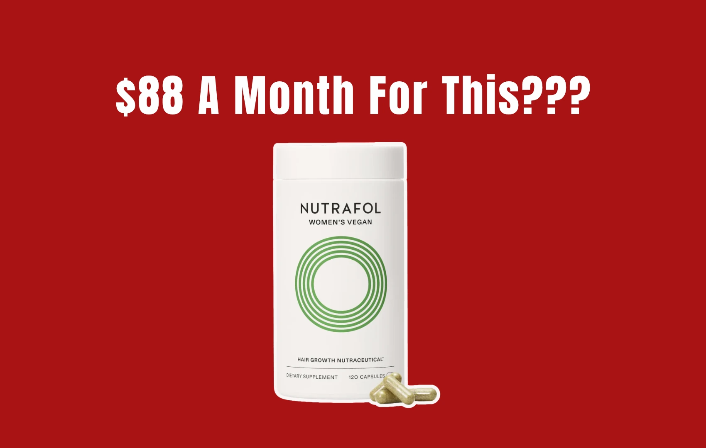
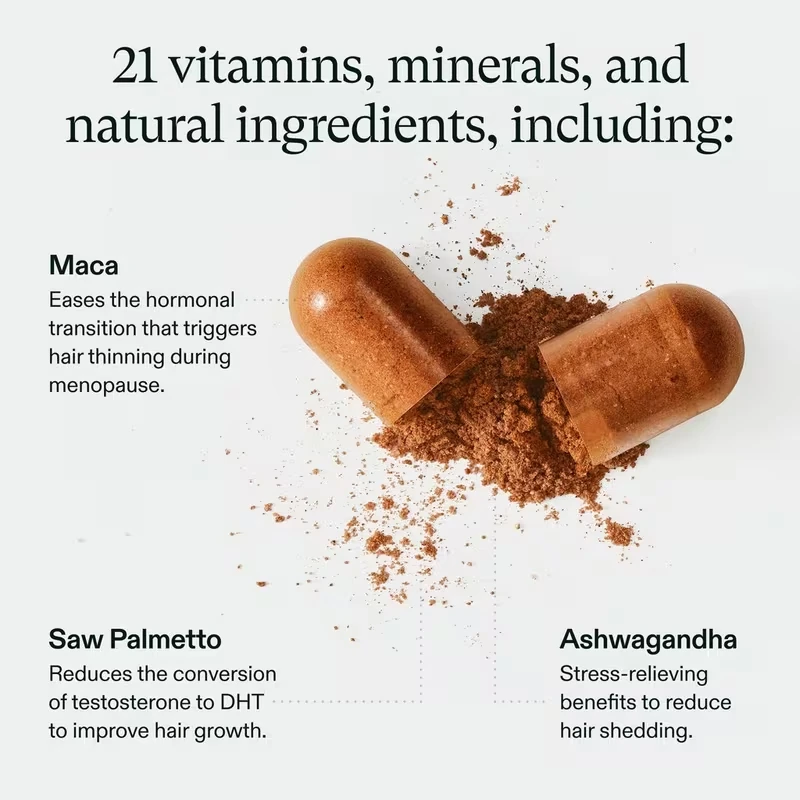
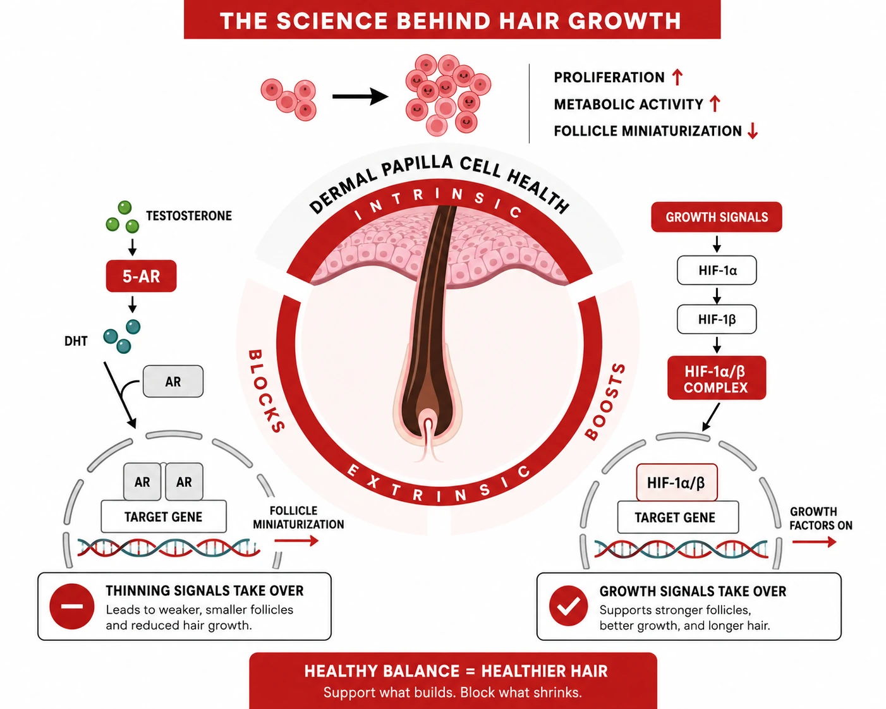
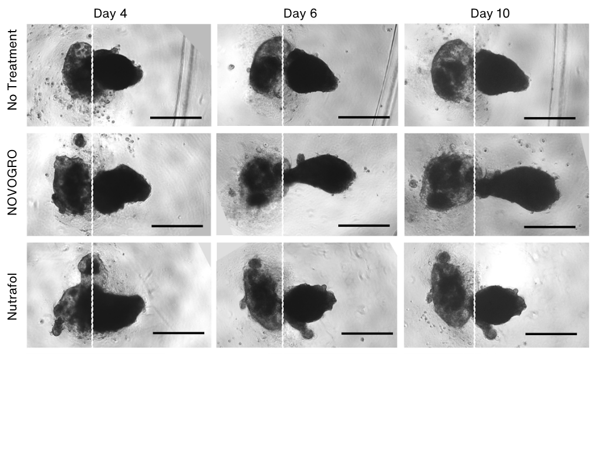

If you’ve been anywhere near the hair loss space, you’ve probably seen Nutrafol come up again and again. It’s one of those products that gets recommended a lot and has built a reputation as something more advanced and more “clinical” than typical supplements. But once you get past the positioning and start listening to real user feedback, the picture feels a lot less clear. It’s rarely a strong yes or a dramatic transformation. Most people land somewhere in the middle with “I think it helped a little” or “I’m not really sure if it’s doing anything.”
That’s where the disconnect starts. There’s a big difference between something being recommended and something being proven, and those two ideas often get blurred together. So the real question is simple. Does it actually work, or is it just extremely well positioned? To answer that, it’s worth looking at what’s actually behind it, from the clinical studies to the ingredients themselves, and why the results don’t always match the expectations.
Clinical Studies: What’s Actually There
Nutrafol leans heavily on being “clinically backed,” but once you actually go through the studies, that claim starts to feel overstated.
One of the most commonly referenced papers (Farris 2017 Nutrafol study) is based on just four participants. There’s no control group, no meaningful statistical analysis, and the entire setup is observational. This isn’t real clinical proof. It’s closer to an early-stage observation that suggests something might be happening, not evidence that it actually works. With a sample size this small, selection and reporting bias are almost guaranteed, and the results don’t really tell you much.
A later study (Ring 2022 nutraceuticals hair study) looks more structured, but still doesn’t hold up particularly well. It includes 40 women only, with no data on men, and shows around a 10 percent increase in hair count after six months. That might sound meaningful, until you notice that the placebo group also improved. On top of that, much of the outcome is based on self-perceived hair loss, which introduces a level of subjectivity that makes it hard to separate actual biological change from expectation.
So yes, there is clinical data. But calling it strong or definitive would be a stretch. At best, it points to modest, inconsistent benefits. It does not support the level of confidence the product is marketed with.
Ingredient Breakdown: What’s Actually Inside
Once you look at the formula, it’s pretty obvious what’s going on. Nutrafol is just a stack of off-the-shelf ingredients like saw palmetto, curcumin, ashwagandha, collagen, and resveratrol, all of which show up across general wellness and anti-inflammatory supplements. Nothing here is new or hair-specific, and the mechanism is indirect at best, focused on improving overall health and hoping hair improves as a side effect rather than targeting the follicle itself.
At around 80 dollars a month, close to $1,000 a year, you’re paying a premium for ingredients that are widely available and easy to replicate. This kind of formula might help if the issue is stress or deficiency, but beyond that, it’s not really designed to address the actual biology of hair loss.

A Different Way of Thinking About Hair Growth
Most products in this category follow the same playbook. Stack familiar ingredients, position it as advanced, and hope something sticks. But behind the scenes, newer approaches are starting to move differently. Instead of adding more ingredients, the focus is shifting toward designing molecules that directly interact with how hair actually grows.
At the center of hair growth are special cells called dermal papilla cells, also known as DPCs. You can think of them as the “engine” of your hair. When the engine is working well, hair keeps growing longer and thicker. When it slows down, hair starts to get thinner.
But the engine is not working alone. It also needs the right environment around it.
One key signal is HIF-1α. Think of it like the follicle’s emergency power system. When the scalp environment needs more support, HIF-1α helps switch on signals that can support blood flow, energy use, and recovery. It is the backstage crew making sure the lights, power, and sound system actually work.
DHT, on the contrary, is the drama. It can push the follicle into miniaturization, making hair come back thinner, weaker, and less able to hold its ground.

What’s starting to change is how these pathways are being targeted. Instead of indirect support like Nutrafol, newer compounds like NOVOGRO™, the technology in RE:YOU’s serum, are designed to go straight to the source.
A dermatologist I trust has been working on this approach, and the focus is much more specific, directly targeting the key drivers of hair growth and hair loss. Rather than hoping overall health improvements translate to better hair, this approach focuses on DPCs as one pathway, combined with another pathway that controls growth signals, working across both the cells and the surrounding environment. In simple terms, it’s a dual-path system, supporting growth while also addressing what causes thinning, which is a much more intentional way to approach it.
What the Follicle Model Showed
The early lab data also gives us something concrete to look at. The images below come from initial experiments, where these compounds showed a more pronounced response in a 3D follicle model than the Nutrafol serum comparator.
No treatment

Day 4
Day 6
Day 10
NOVOGRO™
Day 4
Day 6
Day 10
Nutrafol serum
Day 4
Day 6
Day 10
Across key pathways, NOVOGRO™ (NV) outperforms several serums currently on the market in terms of follicle response, including Nutrafol serum. The difference shows up early, which is not something you usually see in this category.
How the Formulas Compare in the Lab
Preclinical comparison
HIF-1α Activation vs. Control (%)
Supports the follicle environment tied to oxygen, nutrients, and repair.
- NOVOGRO™52%
- Dutasteride6%
- Minoxidil7%
- KilgourMDNo effect
- Vegamour3%
- NutrafolNo effect
- The Ordinary4%
- KérastaseNo effect
Preclinical comparison
DHT-Building Enzyme Blocked vs. Control (%)
Targets the DHT-related enzyme involved in follicle miniaturization.
- NOVOGRO™47%
- Dutasteride51%
- Minoxidil1%
- KilgourMD3%
- VegamourNo effect
- Nutrafol2%
- The Ordinary3%
- Kérastase4%
Preclinical comparison
Dermal Papilla Cell Viability vs. Control (%)
Reflects support for the follicle cells that help regulate hair growth and strand quality.
- NOVOGRO™17%
- DutasterideNo effect
- MinoxidilNo effect
- KilgourMD2%
- VegamourNo effect
- NutrafolNo effect
- The OrdinaryNo effect
- Kérastase5%
NOVOGRO™ shows activity across multiple follicle-relevant tests, while several familiar serum names stay close to baseline or show no clear signal in certain areas.
Clinical Results of the NOVOGRO™-Powered Serum
I looked into RE:YOU’s clinical study to see how its NOVOGRO™-powered serum performed on actual scalps. The randomized, double-blind study followed 190 women with visible hair thinning over 90 days, comparing daily use with minoxidil. RE:YOU reports that 97% experienced less shedding, average shedding fell 56%, and hair density increased 18%. The brand describes the shedding reduction as 44% better than minoxidil.
These results were assessed through scalp imaging, dermatologist evaluations, standardized comb testing, and participant questionnaires. That is the kind of detail I want behind a hair-growth claim: what changed, how it was measured, and what the finished formula actually did.
It’s still early, but the shift is clear. Instead of supporting hair indirectly, this approach is trying to target the biology directly. And that’s a very different starting point.
The Bottom Line
The gap here is hard to ignore. Nutrafol’s formulation isn’t particularly unique, and the evidence doesn’t quite live up to how it’s marketed. It’s a well-positioned supplement, but not necessarily a step forward in hair science. What’s starting to emerge instead are approaches like NOVOGRO™, which are built around designing molecules for hair biology itself and targeting multiple pathways at once. It’s a very different level of intent, and potentially a very different level of outcome.